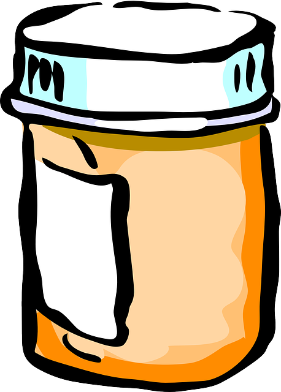

<mat-sidenav-container class='sidenav-container'>
  <mat-sidenav #drawer class='sidenav' fixedInViewport='true'
               [attr.role]="(isHandset$ | async) ? 'dialog' : 'navigation'"
               [mode]="(isHandset$ | async) ? 'over' : 'side'"
               [opened]='!(isHandset$ | async)'>
    <mat-toolbar *ngIf='!(isHandset$ | async)'>
      
      <a routerLink='/' id='sidebar-title'>Cultured</a>
    </mat-toolbar>
    <!--Search bar here-->
    <mat-toolbar>
      <app-search-bar></app-search-bar>
    </mat-toolbar>
    <mat-toolbar>Categories</mat-toolbar>
    <mat-nav-list>
      <a routerLink='/recipes/browse/veggies' mat-list-item>Veggies</a>
      <a routerLink='/recipes/browse/fruits' mat-list-item>Fruits</a>
      <a routerLink='/recipes/browse/legumes' mat-list-item>Legumes</a>
      <a routerLink='/recipes/browse/grains' mat-list-item>Grains</a>
      <a routerLink='/recipes/browse/dairy' mat-list-item>Dairy</a>
      <a routerLink='/recipes/browse/soft-drinks' mat-list-item>Soft Drinks</a>
      <a routerLink='/recipes/browse/vinegar' mat-list-item>Vinegar</a>
      <a routerLink='/recipes/browse/alcohol' mat-list-item>Alcohol</a>
    </mat-nav-list>
  </mat-sidenav>
  <mat-sidenav-content>
    <mat-toolbar color='primary'>
      <button
        type='button'
        aria-label='Toggle sidenav'
        mat-icon-button
        (click)='drawer.toggle()'
        *ngIf='isHandset$ | async'>
        <mat-icon aria-label='Side nav toggle icon'>menu</mat-icon>
      </button>
      <span *ngIf='isHandset$ | async'>
        
      </span>
      <span *ngIf='isHandset$ | async'>
        <a routerLink='/'>Cultured</a>
      </span>
      <a routerLink='/recipes' routerLinkActive='active' mat-list-item>Recipe Ideas</a>
      <span class='spacer'></span>
      <button mat-raised-button routerLink='/recipes/create' color='accent'>Create Recipe</button>
      <button mat-icon-button [matMenuTriggerFor]='accountMenu'>
        <mat-icon>account_circle</mat-icon>
      </button>
      <mat-menu #accountMenu='matMenu'>
        <button routerLink='/recipes/self' mat-menu-item>My Recipes</button>
        <button routerLink='/users/self' mat-menu-item>My Profile</button>
        <button (click)='logOut()' routerLink='/' mat-menu-item>Log Out</button>
      </mat-menu>
    </mat-toolbar>
    <!-- Add Content Here -->
    <div class='content'>
      <ng-content></ng-content>
    </div>
    <app-footer></app-footer>
  </mat-sidenav-content>
</mat-sidenav-container>
